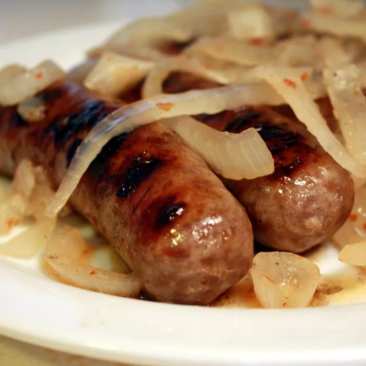

BEER Brats!

A yummy and easy recipe for beer brats
For when your hungry and want to show off to all your friends, but don't want to put a lot of effort into it.
Ingredients
- 4 (12 ounce) cans beer
- 1 large onion, thinly sliced
- 10 bratwurst
- 2 teaspoons red pepper flakes
- 1 teaspoon garlic powder
- 1 teaspoon salt
- 1/2 teaspoon ground black pepper
Recipe Instructions
- Combine beer and onion slices in a large pot; bring to a boil. Add bratwurst, pepper flakes, garlic powder, salt, and pepper. Reduce heat to medium and cook for 10 to 12 minutes.
-
Meanwhile, preheat an outdoor grill for medium-high heat and lightly oil the grate.
-
Remove bratwurst to a plate. Reduce heat to low and let onions simmer until needed.
- Cook bratwurst on the preheated grill, turning occasionally to get char marks, until no longer pink in the middle, 5 to 10 minutes. An instant-read thermometer inserted into the center should read at least 160 degrees F (70 degrees C).
-
Serve bratwurst with onions.
Return to top
Return to main page